神舟笔记本睡眠后开启插入耳机无声音
神舟笔记本插入耳机无声音的解决方案 Hotkey 任务计划程序
最近发现神舟笔记本睡眠后再开启，耳机就没声音了，但是系统却能识别到设备。搜索后发现需要安装神舟的Hotkey驱动（如今已更名为控制中心）。
[TOC]
1. 初步解决方案
在神舟服务官网搜索自己笔记本的型号，根据操作系统类型下载最新的的Hotkey驱动。
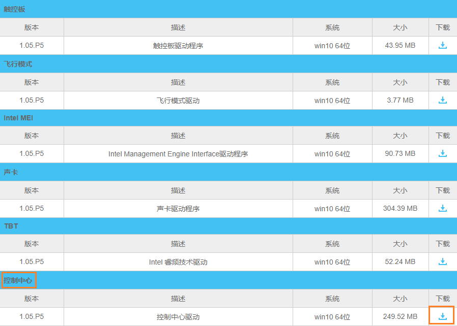
解压后执行Setup.exe程序进行安装 。
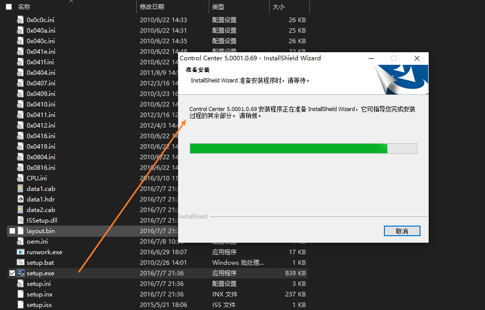
安装完后可以发现插入耳机已经有声音了，进入任务管理器，点击启动选项卡，设置HkeyTray开机启动。
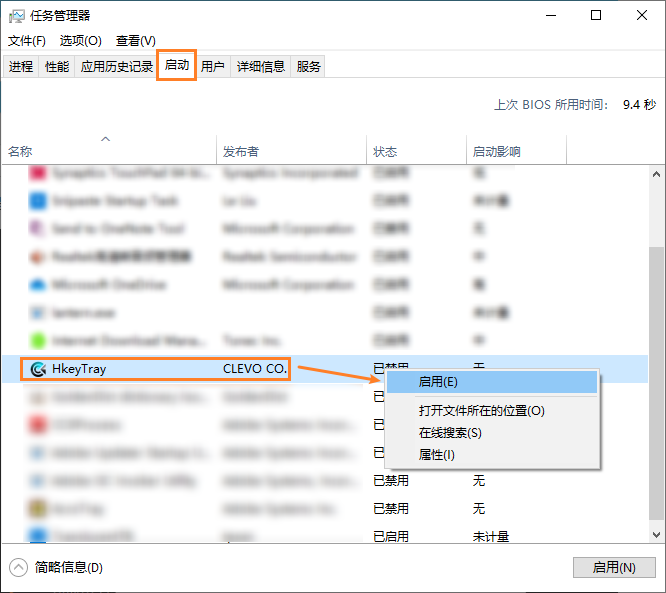
2. 中级解决方案
安装Hotkey插件确实能解决问题，但是ControlCenter在后台时会有一大堆程序，在任务栏的图标也无法关闭。
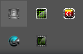
禁用HkeyTray开机启动后打开Hotkey的安装目录C:\Program Files (x86)\Hotkey，其实让耳机恢复音频输出的程序只有一个InitHeadphone.exe，想必看到名字大家就知道了，这个程序是初始化耳机的。将这个程序添加到Windows 10的startBar，只需要在电脑睡眠唤醒后点击一下，耳机就能恢复音频输出了。
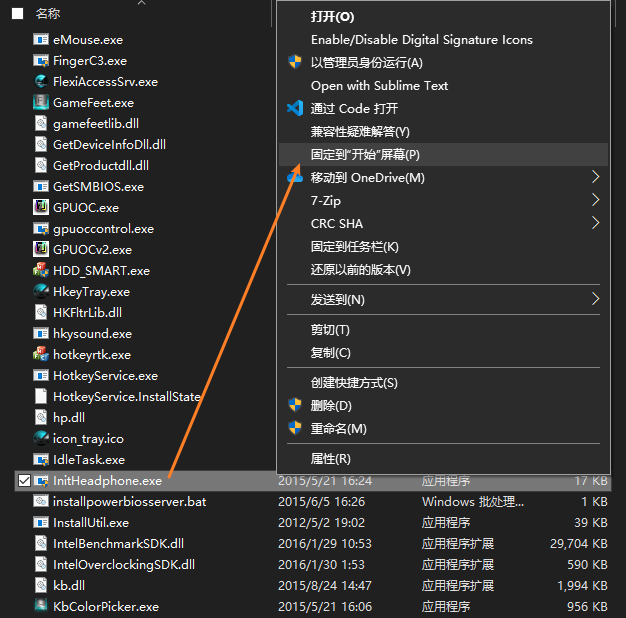
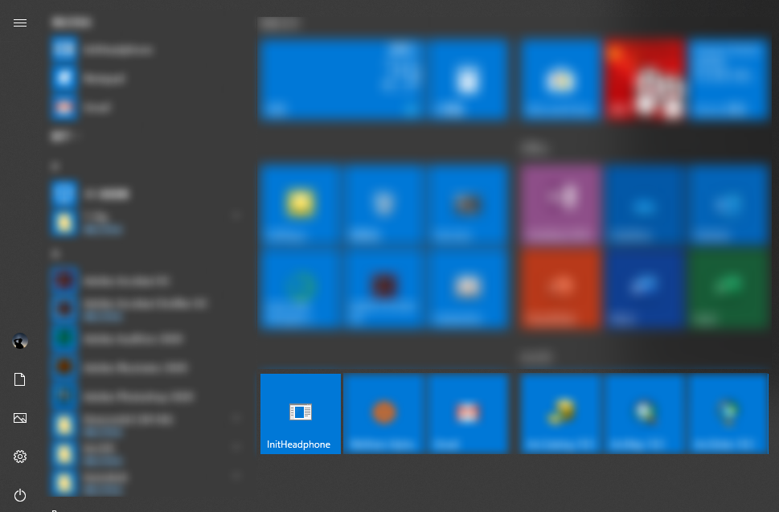
3. 终极方案
利用Windows10的任务计划功能，新建睡眠唤醒就执行InitHeadphone.exe程序的任务，就不用手动点击了。
右键单击任务栏的Windows图标，选择计算机管理。
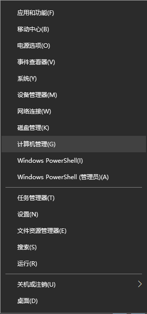
在任务计划程序面板选择新建任务。
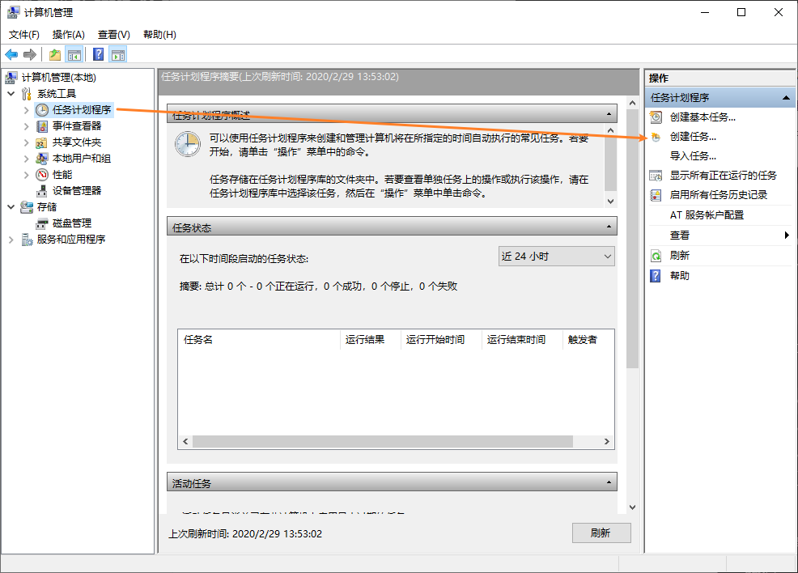
接着输入任务名称和描述，在安全选项中选择使用最高权限运行
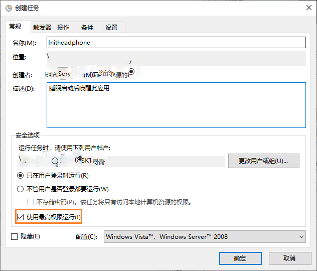
新建触发器，使计算机睡眠唤醒时能触发该项任务。选择发生事件时开始任务，在设置中日志选择系统，源选择Power-Troubleshooter，事件ID选择1，最后点击确定保存该触发器。
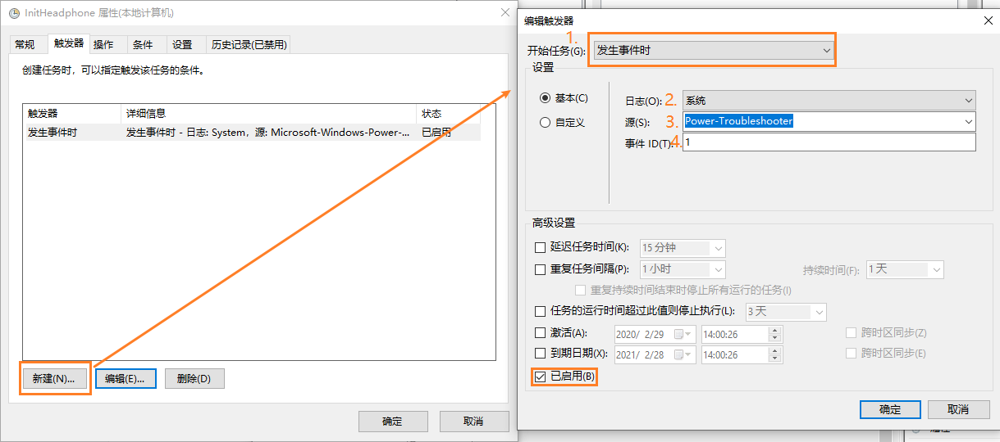
新建操作，操作选择启动程序，设置面板浏览程序地址，默认地址为C:\Program Files (x86)\Hotkey\InitHeadphone.exe，最后点击确定保存该操作。
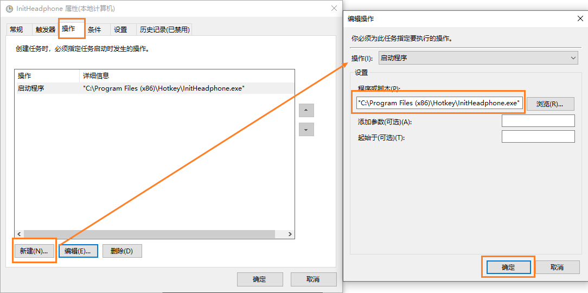
最后可以在任务计划中查询是否创建成功。
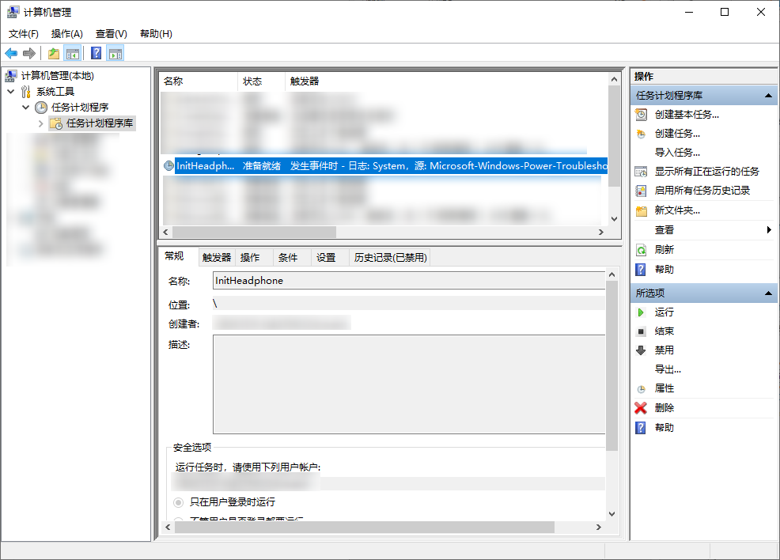
本博客所有文章除特别声明外，均采用 CC BY-SA 3.0协议 。转载请注明出处！